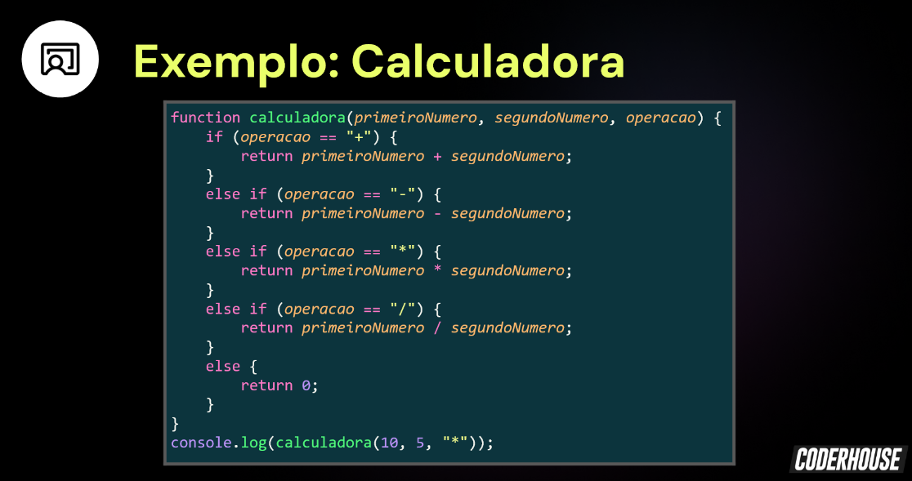

1 - Para Praticar!
- Crie uma função que:
- Receba um número do usuário
- Verifique se esse número é par
- Exiba um alert com o resultado
2 - Para Praticar!
- Crie uma função que faz subtrações:
- Receba dois números
- Verifique qual é o número maior
- Faça uma subtração do maior pelo menor
- Exiba o resultado com o console
3 - Para Praticar!
- Refaça o exemplo da calculadora usando apenas arrow functions.
- Exiba o resultado com o alert.

4 - Atividade extra!
- Codifique ao menos três funções cujas instruções permitam resolver um problema particular, segmentado em tarefas.
- A informação a ser processada deve ser inserida pelo usuário, e o resultado do processamento será visualizado em uma saída (alert ou console.log).
- Para realizar essa tarefa, sugerimos pensar em um processo complexo, decompô-lo em ao menos três partes e criar funções que se encarreguem de cada uma dessas partes.